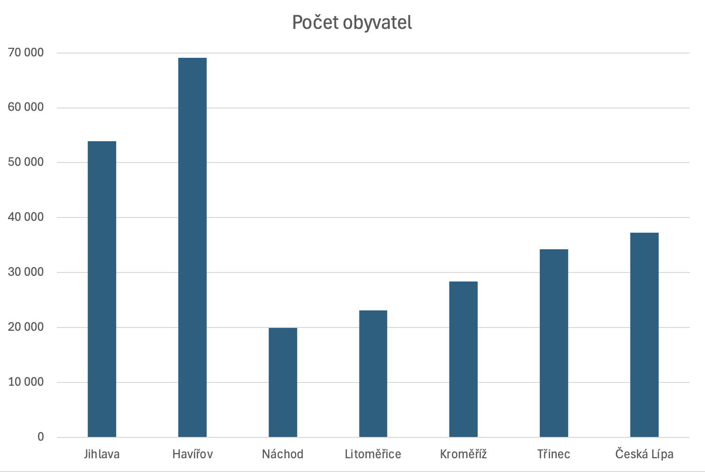

V této hodině se podíváme na třídění dat a jejich čtení z grafu.
Na internetu vyhledej do kterého kraje dané město spadá. Spoj tyto dvojice.
Vyčti nebo odhadni z grafu kolik obyvatel v daném městě bydlí.
